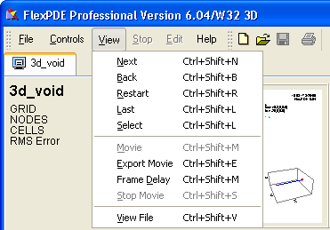

|
Viewing Saved Graphics Files |

  
|
|
Viewing Saved Graphics Files |
|
Whenever a problem is run by FlexPDE 6, the graphical output selected by the PLOTS section of the descriptor is written to a file with the extension ".pg6". These files can later be viewed by FlexPDE without re-running the job. (FlexPDE 6 can also open output files from versions 4 and 5.) You can open these files from the "File | View File" or the "View | View FIle" menu items on the main FlexPDE menu, or from the "File | Open File" menu using suffix selection. A standard "Open_File" dialog will appear, from which you may select from the available files on your system. Once a file is selected, the first block of plots will be displayed.
On the left is a "Status" window, much like the one that appears during the run. Not all the runtime information will appear here, but only those items necessary to identify the current group of plots.
In steady-state problems, all the PLOT windows will be displayed. If the problem is staged, then each stage will appear in a separate group.
In time-dependent problems, each plot time group specified in the PLOTS section of the descriptor will form a display group.
The Problem Tab shows the icon  to indicate that this is a "View" file, not a PDE problem.
to indicate that this is a "View" file, not a PDE problem.
You can use the "View" item in the main menu to control the viewing of these stored graphics:

Thumbnail Plot Displays
In the normal thumbnail display, all the plots of a group are displayed simultaneously. In this case, the "View" menu items have the following meanings:
Next
Use this item to advance to the next group of plots in the file. If there are no more groups, a message box will appear.
Back
Causes FlexPDE to back up and redisplay the previous group. If there are no earlier groups, a message box will appear.
Restart
Returns to the beginning of the file and displays the first group.
Last
Scans to the end of the file and displays the last group.
Select
Displays a list of plot times that can be viewed. Double-clicking an entry views the selected plot group.
Movie
This item is active only for time-dependent or staged problems. It will cause all groups to be displayed sequentially, with a default delay of 500 milliseconds between groups (plus the file reading time).
Frame Delay
Allows redefining of the delay time between movie frames.
Stop
During the display of a movie, you can use Stop to halt the display.
View File
Selects a new graphics file to be opened in a new tab.
Maximized Plot Windows
When a selected View plot is maximized, either by the right-click menu or by double-click, the behavior of some of the View menu items is modified:
Next
Advances to the next instance of the currently maximized plot. If there are no more instances, a message box will appear.
Back
Backs up and redisplays the previous instance of the currently maximized plot. If there are no earlier instances, a message box will appear.
Movie
This item is active only for time-dependent or staged problems. It will cause all instances of the current plot to be displayed sequentially, separated by the currently active Frame Delay time (plus the file read time).
Export Movie
An export parameters dialog will appear, allowing you to select the file format and resolution. A movie will then be displayed as with "Movie". Each frame of the movie will be exported to a file of the selected type and resolution. The files will be numbered sequentially, and can be subsequently imported into an animation program such as "Animation Shop" to create animations.
Page url: index.html?view.html